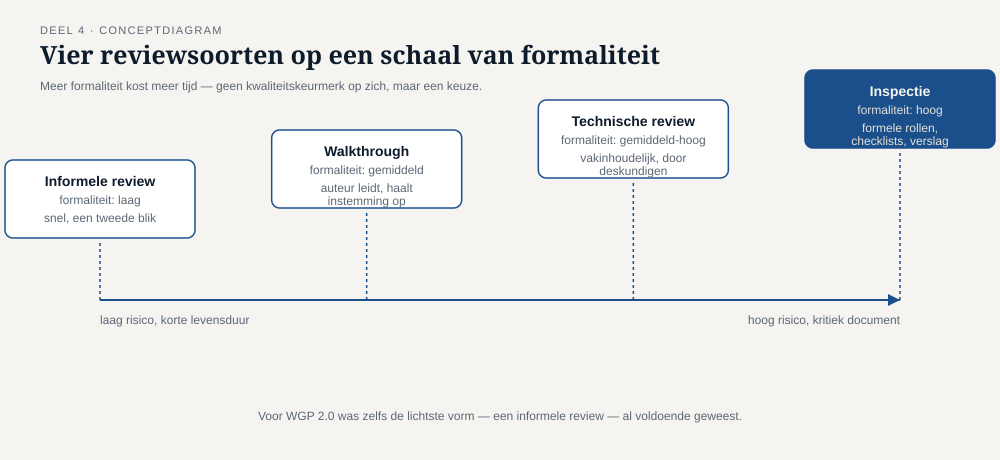
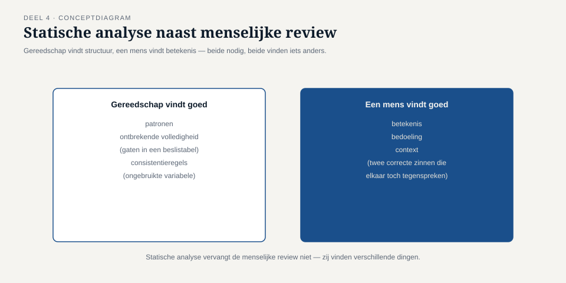

Deel 4 — Statisch testen
Slidedeck · Ductus-cursus Testen en Kwaliteitsborging · niveau 1 · deel 4 van 30 · 27 slides
Slidetypen: titleSlide, sectionSlide, bulletsSlide, statementSlide, quoteSlide, tableSlide, figureSlide, opdrachtSlide.
Slide 1 — titleSlide
Statisch testen Deel 4 · Niveau 1 Fundament Cursus Testen en Kwaliteitsborging
Slide 2 — quoteSlide
"Een deeltijdwijziging gaat in per de eerste van de eerstvolgende maand." — hoofdstuk 4
"Wijzigingen binnen de lopende maand worden met terugwerkende kracht verwerkt." — bijlage B
Beide zinnen correct. Samen tegenstrijdig.
Slide 3 — statementSlide
Een ervaren reviewer met een uur de tijd had deze twee zinnen naast elkaar gelegd.
Zes weken bouw en een teruggedraaide livegang waren dan nooit gebeurd.
Dit is bevinding T4.
Slide 4 — opdrachtSlide
Opdracht 4.1 — Voer de review zelf uit
Drie passages uit het echte WGP 2.0-dossier. 10 minuten individuele voorbereiding — écht individueel.
Dan 15 minuten reviewbijeenkomst, groepjes van drie.
Slide 5 — statementSlide
De duurste review is de review
die iedereen voor het eerst tijdens de sessie zelf leest.
Slide 6 — sectionSlide
1. Wat statisch testen is
Slide 7 — tableSlide
Statisch vs. dynamisch
| Statisch | Dynamisch | |
|---|---|---|
| Object | elk werkproduct | een draaiend systeem |
| Uitvoering | nee | ja |
| Vindt | tegenstrijdigheid, ambiguïteit | gedrag onder invoer |
| Kosten per vondst | laag | oplopend |
Slide 8 — statementSlide
Statisch testen is meer dan codereview.
Elk document, elk model, elke testgevallenlijst is te reviewen.
Slide 9 — sectionSlide
2. Reviewsoorten
Slide 10 — figureSlide

Slide 11 — bulletsSlide
Formaliteit is een keuze
- Meer formaliteit = meer tijd, meer diepgang
- Minder formaliteit = sneller, past bij laag risico
Vuistregel: de formaliteit staat in verhouding tot wat er misgaat als de fout blijft staan.
Slide 12 — statementSlide
Voor WGP 2.0 was zelfs de lichtste vorm voldoende geweest.
Er was geen inspectie nodig — alleen een kruislezing.
Slide 13 — opdrachtSlide
Opdracht 4.2 — Welke reviewsoort past hier?
Vier documenten. Kies informeel, walkthrough, technisch of inspectie. Onderbouw in één zin.
15 minuten, individueel.
Slide 14 — sectionSlide
3. Het reviewproces
Slide 15 — figureSlide

Stap 3 = meest overgeslagen, grootste impact.
Slide 16 — bulletsSlide
Rollen
- Auteur — schreef het document, beoordeelt het niet zelf
- Moderator — leidt het proces
- Reviewers — idealiter met verschillend perspectief
- Notulist — legt bevindingen vast
Geen van deze rollen is "de manager die goedkeurt".
Slide 17 — statementSlide
Een review is een bevindingenmoment, geen goedkeuringsmoment.
Bespreek de bevinding. Los haar niet ter plekke op.
Slide 18 — tableSlide
Wat reviews laat mislukken
| Faalpatroon | Gevolg |
|---|---|
| Geen voorbereidingstijd | oplezen i.p.v. beoordelen |
| Verkeerde reviewers, zelfde team | dezelfde blinde vlek |
| Reviews als schuldvraag | auteurs verbergen werk |
| Geen follow-up | bevindingen verdampen |
Slide 19 — opdrachtSlide
Opdracht 4.3 — Herken het faalpatroon
Vier situaties. Benoem het patroon, formuleer een tegenmaatregel.
15 minuten, tweetallen.
Slide 20 — sectionSlide
4. Statische analyse
Slide 21 — figureSlide

Slide 22 — statementSlide
Geen enkele tool had hoofdstuk 4 en bijlage B tegen elkaar gelegd.
Beide zinnen zijn grammaticaal volmaakt in orde.
Slide 23 — opdrachtSlide
Opdracht 4.4 — Statische analyse buiten code
Testgevallenlijst, DMN-tabel, user stories. Wat zou gereedschap hier kunnen vinden?
15 minuten, groepjes van drie.
Slide 24 — bulletsSlide
TMAP-lens
- Daar: reviews verweven in de werkwijze — peer review, drie-amigo's-sessies
- Minder formele varianten, want kwaliteit zit al ingebakken in het team
Werkt dat bij Meridiaan? Alleen wáár teams echt samenwerken — niet over de grens portaal/kernadministratie.
Slide 25 — bulletsSlide
Examenaansluiting — CTFL hoofdstuk 3
- Statisch vs. dynamisch, reviewsoorten, reviewproces, rollen
- Statische analyse
Let op: walkthrough ≠ technische review — vaakst verward.
Slide 26 — bulletsSlide
Huiswerk
- Opdracht 4.5 — organiseer zelf een lichte review (startpunt deel 5)
- Oefentoets, tien vragen
Slide 27 — statementSlide
Volgende keer: black-boxtechnieken
Welke van je bevindingen uit 4.5 was een randgeval? Dat wordt het begin van T6.